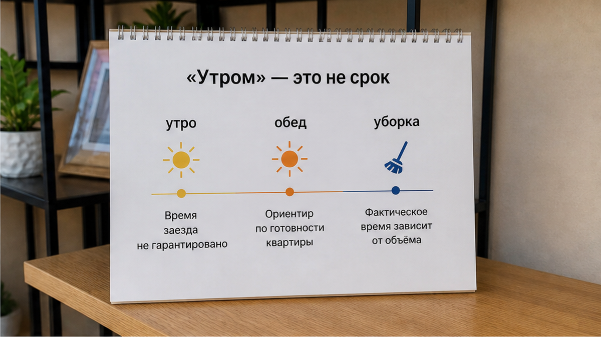
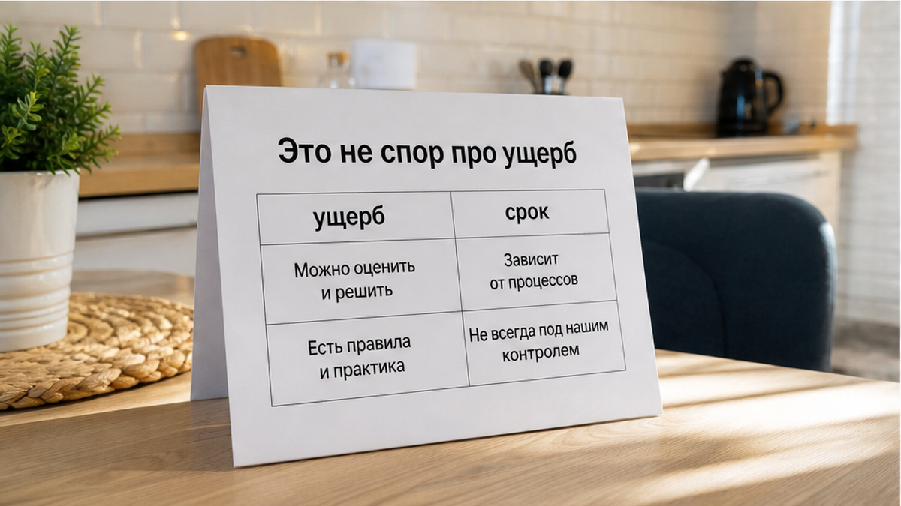
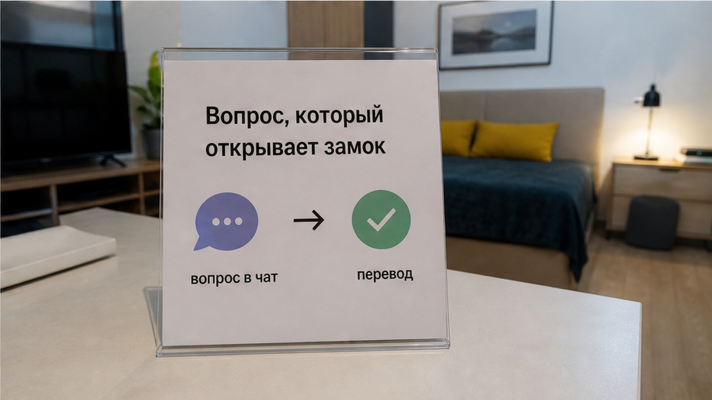

«Залог вернёте утром?» — гость спросил ещё до оплаты. До заезда, до ключей, до чемодана в коридоре. Ответ был быстрый, человеческий: «Да, после проверки, до обеда». Он перевёл 5 000 ₽ на карту хозяина и поехал спокойно. Сумма названа. Срок назван. Всё в переписке.
Утром ключи легли в ящик у двери, гость вышел с вещами — и увидел новое сообщение: «Вернём после уборки и фото». Не «до обеда». Не «после проверки до такого-то времени». Просто после. После уборки, которую он не увидит. После фото, которое ему никто не обязан прислать. После события без часов, без имени человека, который принимает квартиру, и без понятного конца. Он сидел с чемоданом, обновлял приложение банка, а пять тысяч оставались где-то между «утром» и «когда-нибудь».
Я хост посуточной в Тюмени. Это «Добрый дом». Пишу разборы в Telegram · MAX — про то, как договорённости о деньгах выглядят до заезда и во что превращаются после.

История собирательная. Не случай в «Добром доме». Но именно так люди попадают в неприятную паузу, когда ищут квартиру посуточно в Тюмени, спрашивают всё заранее, сохраняют чат — и всё равно остаются без денег на неопределённое время.
— Залог вернёте утром, правильно?
— Да, после проверки, до обеда.
На слух здесь всё хорошо. Хозяин не сказал «не верну». Не назвал удержание. Не предъявил ущерб. Даже слово «до обеда» произнёс. Но гость услышал это как срок, а хозяин оставил себе настроение. Пока гость живёт в квартире, эти два смысла могут существовать рядом. Когда ключи сданы — они разъезжаются.
В сообщении нет главного: точного времени, понятного порядка проверки, ответа на вопрос, что будет после неё. Что именно смотрят? Кто смотрит? Сколько длится осмотр? Когда деньги вернутся, если уборка задержалась? Гость этого не знает. А значит, у него нет не только срока. У него нет точки, после которой можно сказать: «Мы договаривались иначе».
Самое неприятное в таких историях — сообщение о «после уборки и фото» приходит уже почти на выходе. В этом случае оно пришло за двадцать минут до сдачи ключей. Формально предупредили. По-человечески — поменяли условие в минуту, когда человеку уже не на что опереться. Он не может остаться. Не может выбрать другой вариант. Не может сказать: «Тогда я не заселяюсь». Ключи уходят — и вместе с ними уходит возможность торговаться.
Не «утром». Не «потом». Срок возврата должен быть понятен в чате до заезда.

Тут важно не смешивать разные вещи. Бывает, залог удерживают за повреждение: скол на столешнице, разбитую кружку, пятно на диване. Тогда хотя бы есть предмет разговора: что случилось, есть ли фото, сколько стоит ущерб. Это отдельный конфликт, о нём я писал в тексте «Перевёл залог за посуточную, а на выезде сказали “не вернём”».
Бывает другая механика: человеку говорят, что уборка включена, а на выезде вдруг появляется сумма за грязные простыни. Там тоже есть конкретная претензия, пусть и спорная. Разбирал это отдельно: «Уборка включена» — а на выезде 1800.
Здесь не было ни повреждения, ни претензии к чистоте, ни названной суммы удержания. Квартиру приняли молча. Просто срок возврата уехал. Деньги не отняли — их подвесили.
И это хитрее прямого отказа. На «не вернём» можно отвечать, требовать объяснение, спорить с фото и суммой. А «после уборки» звучит почти безобидно. В нём нет окончательного отказа, поэтому с ним трудно бороться. Но для гостя разница небольшая: деньги не вернулись тогда, когда их обещали вернуть.
Это не история про списание с карты после выезда — там другая механика, о ней есть материал про поздний выезд и доплату с карты. Там деньги уходят со счёта. Здесь они просто не приходят обратно. Для кошелька гостя это одинаково неприятно. Для разговора разница важна: в первом случае есть списание, во втором — бесконечное ожидание.
Именно поэтому залог посуточно — не вопрос доверчивости гостя и не проверка его характера. Это обычная денежная договорённость. Чем меньше в ней ясности, тем больше власти у того, на чьей карте лежат деньги.

Когда именно возвращают залог и что должно быть в переписке до выезда?
Вот этот вопрос стоит задать до перевода. Не «вернёте же?». Не «обычно утром возвращаете?». В слове «обычно» уже живёт лазейка. Сегодня утром, завтра после уборки, послезавтра после фото — всё это можно назвать обычным, если точного обещания нет.
Нормальный ответ скучный. В нём есть сумма, способ возврата, крайнее время, человек или порядок осмотра. Например: залог вернём на ту же карту до 14:00 после осмотра квартиры. Скучно — и хорошо. Такие сообщения потом не надо толковать. Их можно просто перечитать.
А тёплый ответ без цифр часто звучит так: «Не переживайте, всё вернём». Это не обязательно обман. Но это отсутствие правила. А если правила нет, решение принимает тот, у кого ваши деньги.
У вас бывало, что обещанное «утром» превращалось в «после уборки» уже на выезде? Напишите в Telegram или MAX. Иногда одной строчки из переписки достаточно, чтобы увидеть, где срок превратился в обещание без срока.
В «Добром доме» сумму залога и срок возврата фиксируем в чате до заезда одним сообщением. Его не нужно искать в голосовых, помнить на словах или угадывать по тону менеджера. Там должны быть сумма, способ возврата, крайнее время и понятный смысл осмотра.
Уборка — наша работа, а не удобная причина растянуть возврат денег. Если условия другие, они должны быть написаны заранее, а не появиться после того, как гость сдал ключи. Фото квартиры при заселении тоже помогают: меньше потом разговоров из серии «а здесь точно так было?». О том, почему состояние квартиры и залог лучше видеть вместе, писал в материале про стиральную машину в карточке и залог.
По практике сервисов бронирования срок возврата договаривают заранее. Можно ориентироваться на сутки после выезда и осмотра, но ориентир сам по себе ничего не спасает. Спасает только то, что написано между гостем и хозяином до перевода.
Сначала проверка. Потом перевод. Не наоборот.
Сначала вы смотрите, как написан срок возврата, что считается проверкой, куда вернут деньги и до какого времени. Потом отправляете залог. Потому что после перевода, а особенно после сдачи ключей, самый сильный аргумент гостя уже потерян: возможность не заселяться на таких условиях.
Наш вывод простой. Залог — не подарок хозяину и не плата за чужое спокойствие. Это деньги гостя, которые временно лежат у другого человека на понятных условиях.
Камера хранения хороша не тем, что вам мило улыбнулись у стойки. Она хороша тем, что на квитанции написано, когда вещь выдадут. Если вместо времени там «после уборки», это уже не порядок. Это чужой карман с вашими пятью тысячами внутри.
Если хотите заранее увидеть условия по деньгам, срокам и возврату до брони — напишите менеджеру. Пришлём правила по залогу до заезда, без обещаний «утром», которые потом внезапно становятся «после».
Связь: Telegram · MAX · бронирование · сайт · +7 (993) 574-83-22 · менеджер.